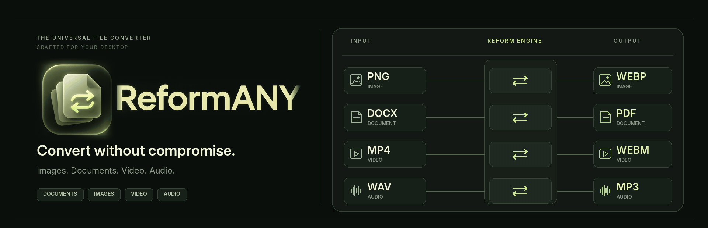

02 / PREVIEW
HoveR
Preview supported files and reach useful actions without having to open a full workspace.
Convert, refine, and manage your files with the focus they deserve. One thoughtful workspace for the formats you use every day.
THE PRODUCT, IN MOTION.Watch on YouTube for playback quality options ↗
The little actions add up. ReformANY brings the essentials together so your next step is always close.
Right-click a file in Windows Explorer and get straight to the actions that matter. A compact circular menu built for faster decisions.
Explore OrbitPreview supported files and reach useful actions without having to open a full workspace.
Batch conversion, resizing, rotation, quality settings and transparency tools, all in one place.
Arrange and extract pages, export page images, add watermarks and visible signatures.
Convert and compress audio or video, trim clips and work with supported FFmpeg-based formats.
Even faster: optional Shake to Orbit opens Orbit with a file drag gesture where Windows Explorer supports it.
From an everyday image to a complex document, discover supported routes without juggling a dozen utilities.
PNG · JPEG · WebP · TIFF · GIF · SVG*
↗PDF · DOCX · PPTX · EPUB*
↗MP4 · WebM · MKV · MOV · AVI
↗MP3 · WAV · FLAC · OGG · Opus
↗ZIP · 7z · RAR · TAR · GZip*
↗CSV · TSV · JSON · XLSX · SRT
↗*Support depends on the specific operation and direction. Some formats need optional local tools; not every input can become every output.
Read the full format matrixConvert and work across different kinds of files, while keeping your workflow in one consistent space.

BUILT TO KEEP THINGS MOVINGSupported conversions process on your Windows device instead of being uploaded to a conversion website.
A considered interface puts relevant actions close and keeps the noise out of the way.
ReformANY documents real format routes and optional tool requirements rather than promising impossible conversions.
Get the current ReformANY release for Windows 10 and 11 (64-bit).
Run the standalone app without a setup wizard.
Download portable ReformANY-Portable.exeUse the guided Windows setup experience.
Download installer reformany-setup.exeVersion 0.3.0 · Windows 10/11 x64 · WebView2 required. Current executables are unsigned; Windows SmartScreen may display a warning. Optional conversion engines may be needed for certain formats.
Release notes & checksumsNo. ReformANY is a Windows desktop app. Supported conversions run locally on your computer, without a cloud upload.
No. Format support depends on the input, output and operation. The format matrix describes current support and limitations.
All published versions and downloads are available on the GitHub releases page. The download links above point to version 0.3.0.
Yes. Browse the repository and roadmap. ReformANY is proprietary source-available software; refer to the repository license for permitted uses.